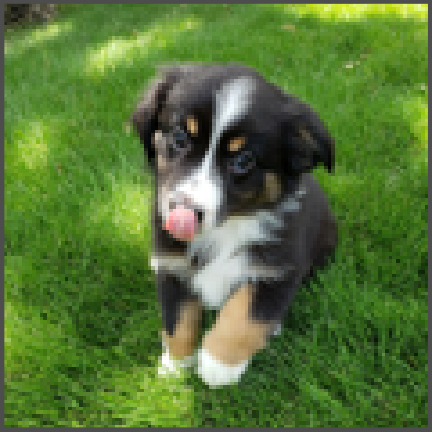
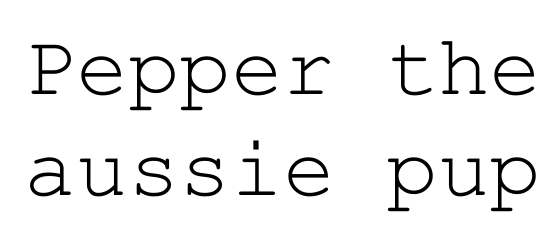
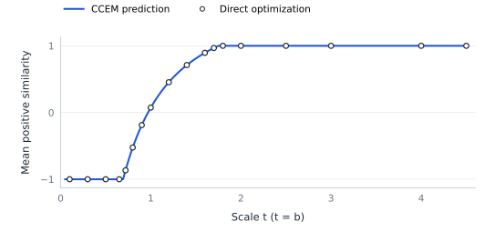
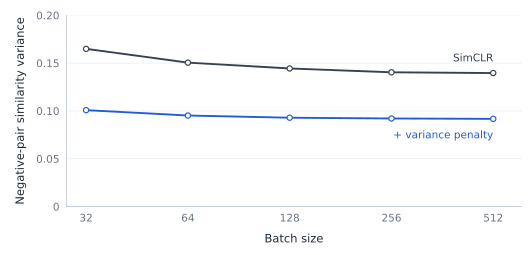
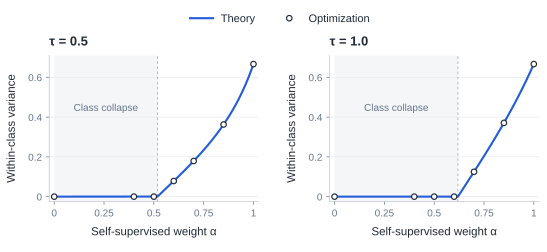

[DRAFT] The Optimal Geometry of Contrastive Learning Objectives
Contrastive learning
Positive pairs are treated as matches; negative pairs as non-matches.
Image–caption pairs


Four instances, eight embeddings
Four instances, two views each: uᵢ and vᵢ form a positive pair.
Vectors have unit norm. Cosine similarity is 1 for identical directions, 0 for orthogonal directions, and −1 for opposite directions.
The matrix has four positive diagonal entries and twelve negative off-diagonal entries.[2]
Eight embeddings
(Cosine) similarity matrix
- Mean similarity of positive pairs
- Mean similarity of negative pairs
Optimization over embeddings
We minimize losses over unit embeddings in sufficient dimension. A trained encoder may impose additional constraints.
Softmax vs. sigmoid contrastive losses
Here n=3: uᵢ–vᵢ are positive pairs; uᵢ–vⱼ, i≠j, are negative pairs.
Symmetric InfoNCE averages six anchor losses; sigmoid sums three positive and six negative pair terms.[4]
Sigmoid terms can be summed independently. InfoNCE requires each complete row or column denominator.[6]
Alignment and separation
For n=3, setting every negative similarity to −1 also forces every positive similarity to −1.
With aligned positives, the minimum negative mean is −1/(n−1), attained by a simplex equiangular tight frame (ETF): an equilateral triangle for n=3.[1][2]
Minimize negative similarity
Maximize positive similarity
Double-Constant Embedding Model
The double-Constant Embedding Model (CCEM) attains the minimum negative mean for each fixed positive mean.
All positive pairs share one similarity; all negative pairs share another.
For image–text pairs, separation between view centers corresponds to a modality gap.
For unit embeddings with d≥n, τ>0, and fixed b≥0, CCEM contains a global minimizer of sigmoid loss (Corollary 2).[1]
Temperature and optimal geometry
InfoNCE is minimized by aligned simplex embeddings at every temperature.
Sigmoid can favor misaligned positives. With b=1 here, alignment begins at τ≈0.185.[1]
Here t=1/τ and b=1; the paper’s Theorem 2 sets t=b.[1]
Two families of contrastive losses
Two loss families, three choices of negative pairs.[2]
InfoNCE-based losses
Compare positive and negative similarities.
Examples: InfoNCE, SimCLR.
Independently additive losses
Add positive and negative penalties separately.
Example: sigmoid loss.
One anchor u₁; cross-view negatives v₂ and v₃. Each family defines its own φ and ψ.[2]
Which pairs does the loss compare?
Cross-view: uᵢ–vⱼ. Within-view: uᵢ–uⱼ or vᵢ–vⱼ, i≠j. Toggle comparisons and vary δ.
The same three pairs, different comparisons
Embedding geometry
Similarity matrix
Select a point or a matrix entry to inspect a pair.
| Loss family | Cross-view only | Within-view only | Both |
|---|---|---|---|
| InfoNCE-based | Aligned simplex | Aligned simplex | Aligned simplex |
| Independently additive | Depends on attraction and repulsion | Aligned simplex | Aligned simplex |
Aligned simplex: positive similarity 1, negative similarity −1/(n−1). Assumptions: Theorems 5.1 and 5.3.[2]
A limit independent of the loss
A mean cross-view negative similarity below −1/(n−1) rules out perfect positive alignment for any normalized encoder in this setup (Theorem 5.2).[2]
Definitions and proofs
Empirical validation
Numerical optimization

Experiment details
10-dimensional embeddings; 50,000 projected-gradient steps; step size 0.5.
Adapted from author implementation (§5.2). This reproduction sets t=b=1/τ.
Full-batch vs. mini-batch training
Fixed mini-batches omit comparisons between batches, leaving their relative geometry undetermined.[2]
Two batches can move independently
Four instances; fixed batches {1,2} and {3,4}. Each two-instance InfoNCE optimum aligns the views at two antipodal points.[7]
Rotating either batch preserves its minimum loss. Moving to the tetrahedron attains the full-batch minimum and increases the fixed mini-batch loss.
Statistics include all u–v comparisons, including pairs omitted from the loss.[2]
Expectation = mean
Variance = mean squared distance from the mean
Embedding geometry
Similarity matrix
Expectation and variance
Same mean, different geometry
Negative mean stays −1/3; negative variance falls from 8/9 through 2/9 to 0.
Positive pairs remain aligned: mean 1, variance 0.
For fixed disjoint batches, both variance bounds decrease with batch size and vanish at full batch (Theorem 5.5).[2]
An auxiliary loss penalizes squared deviations from −1/(n−1), where n is the dataset size.[2]
Definitions and proofs
Empirical validation
Variance regularization

Negative-similarity variance decreases; downstream accuracy depends on the experimental setting.[2]
Values and experiment details
5,000 augmented pairs; SimCLR temperature 0.2; penalty weight 30. Experiments use random batches; Theorem 5.5 assumes fixed partitions.
| Batch size | SimCLR | + variance penalty |
|---|---|---|
| 32 | 0.1649 | 0.1008 |
| 64 | 0.1505 | 0.0952 |
| 128 | 0.1444 | 0.0929 |
| 256 | 0.1404 | 0.0921 |
| 512 | 0.1396 | 0.0917 |
Self-supervised vs. supervised losses
Class collapse occurs when all instances in a class share one embedding.[3]
Instance matches and class matches
Four instances, two views each; classes {1,2} and {3,4}.[3]
ℒself attracts views of the same instance; ℒsup attracts different instances in the same class.
Same-instance pairs appear only in ℒsup’s denominator, following the paper’s decomposition.
Select an anchor to inspect its positive and denominator-only pairs.
Increasing α favors instance separation.[3]
Simplex-to-Simplex Embedding Model
The Simplex-to-Simplex Embedding Model (SSEM) describes the global optima: views align, while within-class spread varies.
Within-class variance 0 means class collapse; 2/3 gives a tetrahedron.[3]
| Pair | Similarity |
|---|---|
| Two views of the same instance | 1 |
| Different instances, same class | 1 − 2 × within-class variance |
| Different classes | −1 + within-class variance |
For this balanced, normalized setting with d≥3, minimizing the one-parameter SSEM curve yields a global optimum.
At τ=0.5, collapse persists through α≈0.518. At α=1, the optimum is a tetrahedron.[3]
Geometric measurements
- Positive similarity: alignment.
- Negative mean and variance: separation and its variability.
- Within-class variance: class collapse.
Definitions and proofs
Empirical validation
Numerical optimization

Experiment details
Eight embeddings in three dimensions; Adam, 2,000 steps, learning rate 0.5; unit normalization at each forward pass.
Adapted from author implementation (§6.1). Points use optimized embeddings; curves use SSEM.